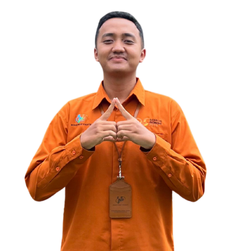
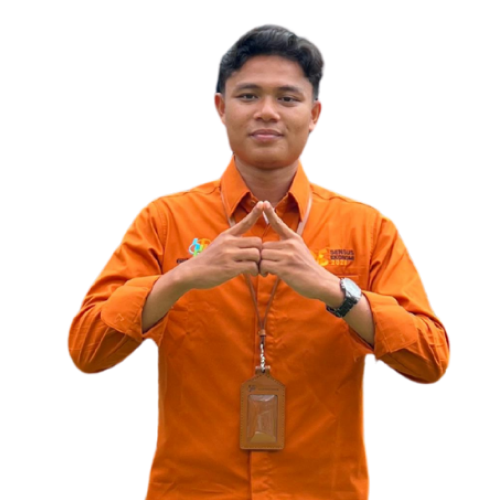
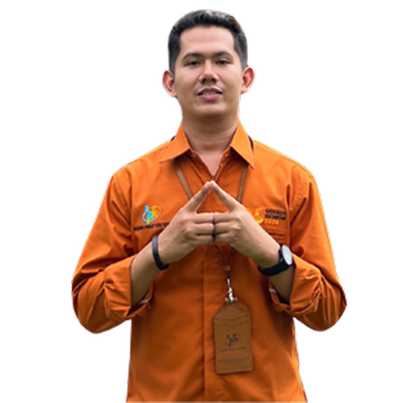

TIM SENSUS EKONOMI 2026
Kabupaten Sijunjung

Yuliandri, SE
Penanggung Jawab

Ade Ayu Rahmadani Nasution, S.Si
Ketua Tim Pelaksana SE 2026

Azmen, S.Si
Wakil Ketua Bidang Teknis Pendataan dan Pelaksanaan Lapangan

Yezi Oktanofa, SE
Wakil Ketua Bidang Administrasi, Hubungan Masyarakat, dan Manajemen Risiko

Proknayco Arsenal, SE
Wakil Ketua Bidang Pengolahan, Teknologi Informasi, dan Diseminasi

Akhirumin, S.M
Wakil Ketua Bidang Analisis dan Kualitas Data

Ajisman, S.M
Anggota Bidang Teknis Pendataan dan Manajemen Lapangan

Atikah Rahim, S.Tr.Stat.
Anggota Bidang Teknis Pendataan dan Manajemen Lapangan

Fadhel Imam Haichal Tanjung, S.Tr.Stat.
Anggota Bidang Teknis Pendataan dan Manajemen Lapangan

Dasmawar
Anggota Bidang Teknis Pendataan dan Manajemen Lapangan

Mirwal
Anggota Bidang Teknis Pendataan dan Manajemen Lapangan

Nofarina
Anggota Bidang Teknis Pendataan dan Manajemen Lapangan

Nurul Aulia Rahmi, S.Tr.Stat.
Anggota Bidang Teknis Pendataan dan Manajemen Lapangan

Eko Pratama
Anggota Bidang Teknis Pendataan dan Manajemen Lapangan

Rizki Kurniawan, S.Pd.
Anggota Bidang Teknis Pendataan dan Manajemen Lapangan

Fadhila Dwiza Putri, A.Md.Stat.
Anggota Bidang Administrasi, Hubungan Masyarakat, dan Manajemen Resiko

Resta Anggarini, SE
Anggota Bidang Administrasi, Hubungan Masyarakat, dan Manajemen Resiko

Shalaita Sekarwati
Anggota Bidang Administrasi, Hubungan Masyarakat, dan Manajemen Resiko
Shindy Bangun Pratiwi, S.Tr.Stat.
Anggota Bidang Administrasi, Hubungan Masyarakat, dan Manajemen Resiko
Herman, S.M
Anggota Bidang Administrasi, Hubungan Masyarakat, dan Manajemen Resiko
Yulia Aryani, S.Tr.Stat.
Anggota Bidang Pengolahan, Teknologi, Informasi dan Diseminasi

Fiona Sri Clarissa, S.Tr.Stat.
Anggota Bidang Pengolahan, Teknologi, Informasi dan Diseminasi

Nano Gustami, A.Md.
Anggota Bidang Pengolahan, Teknologi, Informasi dan Diseminasi

Marwah Erni Ariyani, S.Tr.Stat.
Anggota Bidang Pengolahan, Teknologi, Informasi dan Diseminasi

Noca Rahmatullah, S.Tr.Stat.
Anggota Bidang Analisis dan Kualitas Data

Milla Rusydiana, S.Tr.Stat.
Anggota Bidang Analisis dan Kualitas Data
Developer Web

Anugerah Surya Atmaja, S.Tr.Stat.
Panglima Tenggo

Fachrol Mochti Tanjung, S.Tr.Stat.
Panglima Tenggo

Muhammad Rafi Tasrif, S.Tr.Stat.
Panglima Tenggo
Tim Sensus Ekonomi 2026 Kabupaten Sijunjung berkomitmen untuk melaksanakan pendataan secara profesional, akurat, dan berintegritas.